| dplyr | ggplot2 | tidyr | tukeyedar |
|---|---|---|---|
| 1.2.0 | 4.0.2 | 1.3.2 | 0.5.0 |
17 Visualizing Univariate Distributions
Univariate data consist of measurements or observations of a single characteristic or attribute of a subject or phenomenon. Structurally, we can think of univariate as consisting of a single variable in a dataset. In this course, we will limit the variable to a continuous one. Examples include a vehicle’s miles-per-gallon performance, PFAS concentrations in municipal water, or the average distance between trees in a plot.
Analyzing data benefits from characterizing its statistical properties, such as measures of central tendency and dispersion. Measures of central tendency, often reduced to single values, provide a concise summary of a dataset’s typical value. While summary statistics like standard deviation and interquartile range offer insights into a batch’s dispersion, they cannot fully capture the intricacies of its distribution. Visualization techniques are better suited to reveal these nuances. This chapter will introduce you to graphs designed to explore a batch’s distribution. The choice of graphing technique will depend on the specific aspects of the distribution you wish to emphasize.
Going forward, we will use the terms location, shape and spread to describe a batch of values.
- Location refers to a measure of central tendency, with the (arithmetic) mean and the median being the most popular measures of centrality;
- shape refers to the overall form of a distribution. For example, this can include characterization of skewness, peakedness or modality of a distribution;
- spread is a more succinct characterization of a distribution. Examples include the standard deviation, minimum-maximum range or the interquartile range.
17.1 Histograms
A histogram is one of the more ubiquitous tools for visualizing a batch’s distribution. It divides the range of values into intervals, or bins, and then counts the number of observations that fall within each bin. By plotting the frequency of observations in each bin, histograms reveal a distribution’s shape. For example, to create a histogram of batch b where each bin size covers one unit along the x-axis, we type:
# Generate two random variables
set.seed(23)
a <- round(runif(50, 10, 20))
b <- round(runif(100, 10, 20))
df <- data.frame(Group = c(rep("a", 50), rep("b",100)), Value = c(a,b))
# Generate the histogram for batch b (note the use of b as a vector)
library(ggplot2)
ggplot(NULL , aes(x = b)) + geom_histogram(breaks = seq(9.5,20.5, by = 1), color = "white")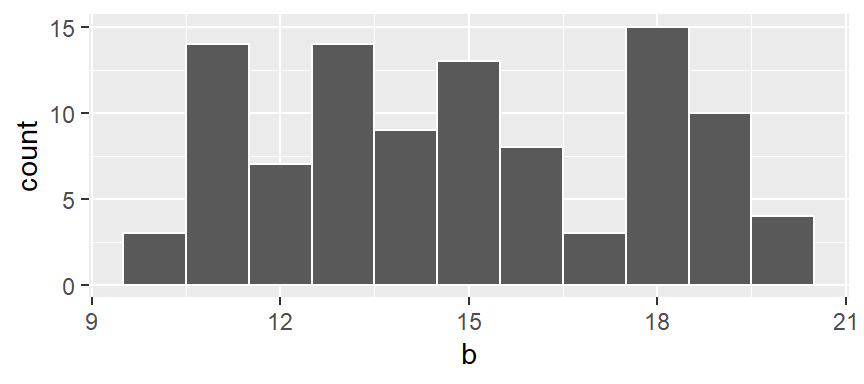
(Note that b does not need to be passed as a dataframe, however, a NULL needs to be added prior to the comma as a placeholder for no dataframe).
In the above example, we are explicitly defining the bin width as 1 unit, and the range as 9.5 to 20.5 via the parameter breaks = seq(9.5,20.5, by = 1). The color argument specifies the outline color. To change the fill color use the fill argument.
In our example, we have three values that fall in the first bin (bin ranging from 9.5 to 10.5), fourteen values that fall in the second bin (bin value ranging from 10.5 to 11.5) and so on up to the last bin which has four values falling in it (bin covering the range 19.5 to 20.5).
We can modify the width of each bin. For example, to have each bin cover two units instead of one, type:
ggplot(NULL, aes(x = b)) + geom_histogram(breaks = seq(9.5,20.5,by = 2), colour = "white") 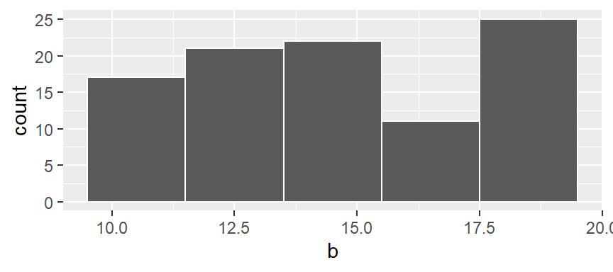
You’ll note that changing bin widths can alter the look of the histogram, this is particularly true when plotting large batches of values.
You can also opt to have the function determine the bin width by simply specifying the number of bins using the bins = parameter. For example, to display 12 bins, type:
ggplot(NULL, aes(x = b)) + geom_histogram(bins = 12, colour = "white")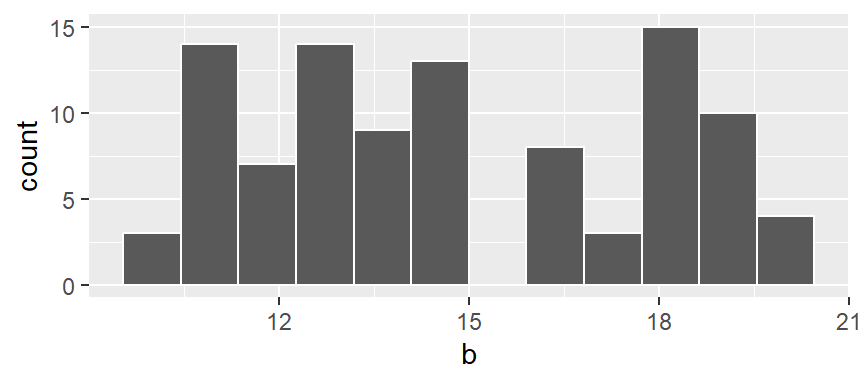
Note that if a bin has no values falling in it, an empty space in the plot is used as an *empty bin” placeholder.
So far, we had the histogram display the total number of observations falling in each bin on the y-axis. This may be easy to interpret, but it may make it difficult to compare batches of values having different total number of observations. To demonstrate this, let’s plot both batches a (which has 50 observations) and b (which has 100 observations) side-by-side.
ggplot(df, aes(x = Value)) + geom_histogram(bins = 10) + facet_wrap(~ Group)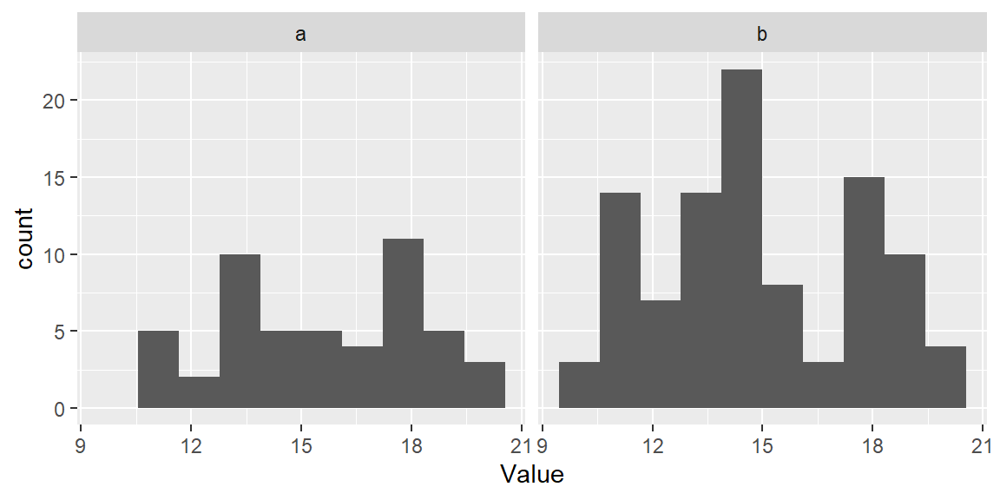
The differences in batch sizes results in differing bar heights. This has for effect of squeezing the bars downward in the plot for batch a because of its smaller batch size. This can make it difficult to compare distributions between batches. To resolve this issue, we can convert counts to density whereby the areas covered by each bin sum to 1. Each bin’s density value is computed from:
\[ density = \frac{count}{bin\ width * total\ observations} \]
In ggplot2 we will map the after_stat(density) aesthetic to the y-axis to have ggplot compute density values.
ggplot(df, aes(x = Value, y=after_stat(density))) + geom_histogram(bins = 10) +
facet_wrap(~ Group)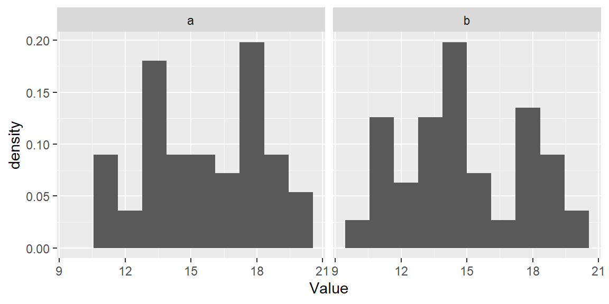
This makes for a more appropriate comparison between batches.
17.2 Density plots
One limitation with a histogram is its sensitivity to the number of bins chosen (as demonstrated in the above examples). It also suffers from discontinuities in its bins. Let’s start with a small set of values a.
In the following example, two histograms are generated using the same bin sizes and counts but with different starting x values. The red marks along the x-axis show the location of each a observation. Note that some observations overlap.
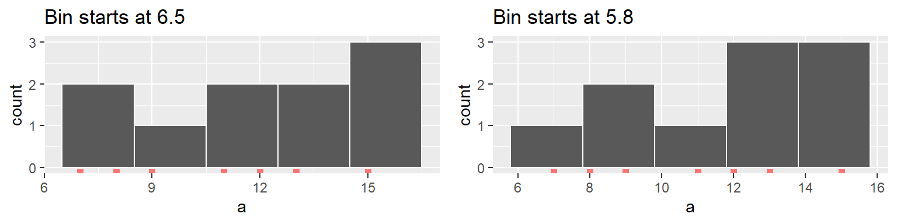
The second histogram suggests a possibly skewed shape to the distribution while the one on the left suggests a more uniform shape.
One workaround to the histogram’s limitations is to compute density values on overlapping bins. For example, let’s take the first bin and have it count the number of values between 5 and 9 (exclusive) in a, then divide that number by the total number of values times the bin width–this gives us two observations falling in the bin and thus a density value of 2 / (10 * 4) = 0.05. The following plot shows the bin. An orange dot is also added to represent the bin’s midpoint.
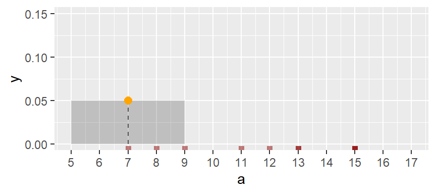
Next, we shift the bin over by one unit, then we calculate the density of observations in the same way it was computed for the first bin. The density value is plotted as an orange dot. Note how the bin overlaps partially with the first bin.
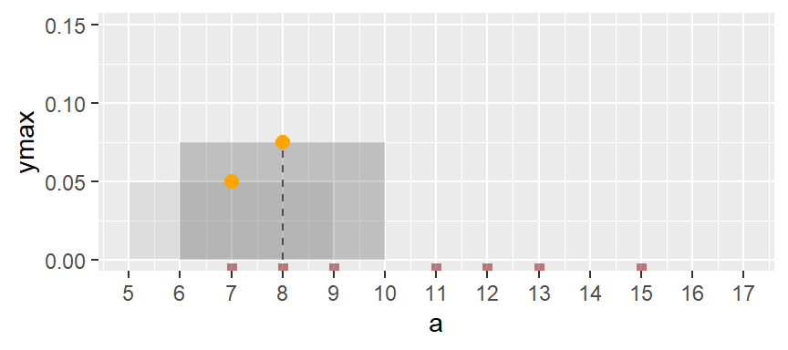
The same process is repeated for the third bin.
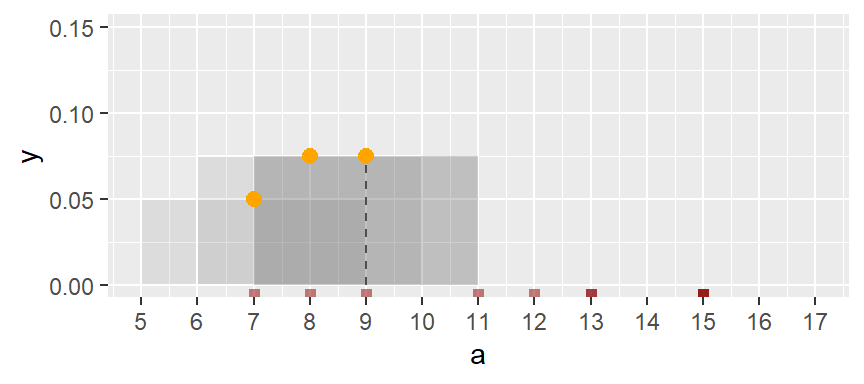
The process is repeated for each bin until the last bin is reached. (Note that some of the a values are duplicates such as 13 and 15–hence the high density values for the upper range).
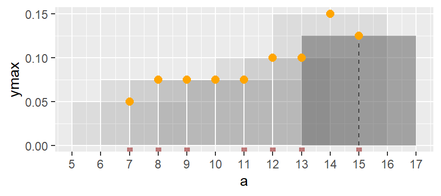
If we remove the bins and connect the dots, we end up with a density trace.
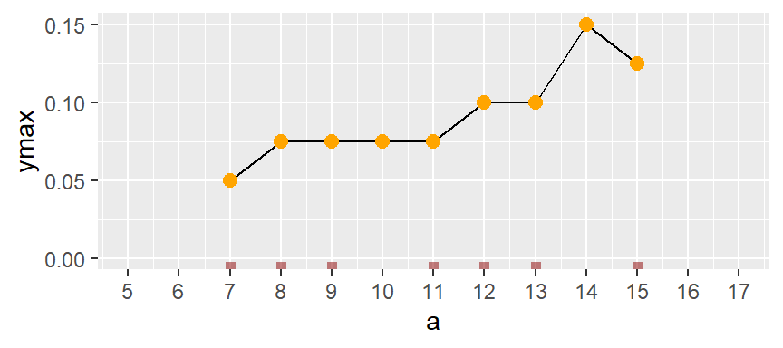
A property associated with the density trace is that the area under the curve sums to one since each density value represents the local density at x.
In the above example, we assigned an equal (rectangular) weight to each point within its assigned bin–regardless how far the point is to the bin’s midpoint. This resulted in some raggedness to the plot.
To smooth out the plot, we can apply different weights to each point such that points closest to the bin’s midpoint are assigned greater weight than the ones furthest from the midpoint. A Gaussian function can be used to generate such weights. The following figure depicts the difference in weights assigned to a point based on its distance to the bin center of 12. A bin width of 2 units is used in this example.

With the rectangular weight (blue line), all points within the bin width are assigned an equal weight value of 1. Note that only those points within the 2 unit bin width take part in the density calculation.
With the Gaussian weight (orange line), points closest to the bin center are assigned greater weight than those furthest from the center. Note that points beyond the 2 unit bin width can still take part in the calculation of the density value at x=12.
ggplot’s density function defaults to the Gaussian weighting strategy. You can generate a density plot of the data using the geom_density function.
set.seed(23)
a <- sort(round(runif(10, 5, 15)))
ggplot(NULL, aes(x = a)) + geom_density(fill = "grey60")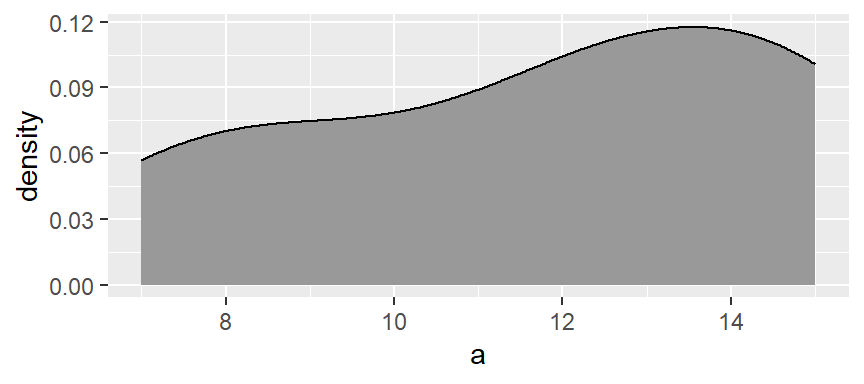
This plot appears much smoother than the one created in the above demonstration. The density function generates 512 points for its density trace.
The function adopts the gaussian weight function and will automatically define the bandwidth (analogous in concept to the bin width).
To adopt a rectangular weight, set the kernel parameter to "rectangular".
ggplot(NULL, aes(x = a)) + geom_density(fill = "grey60", kernel = "rectangular" )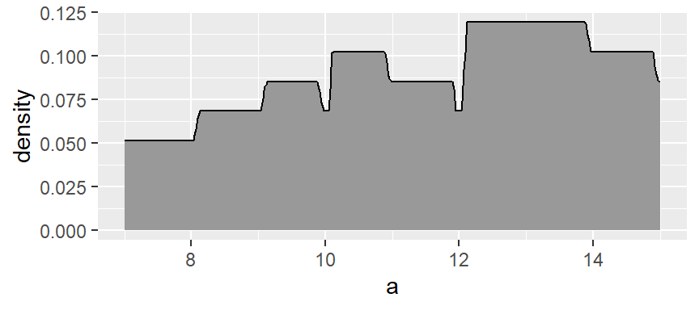
Note the raggedness in the plot.
You can modify the smoothness of the density plot by adjusting its bandwidth argument bw. Here, the bandwidth defines the standard deviation of the Gaussian function.
ggplot(NULL, aes(x = a)) + geom_density(fill = "grey60", bw = 1)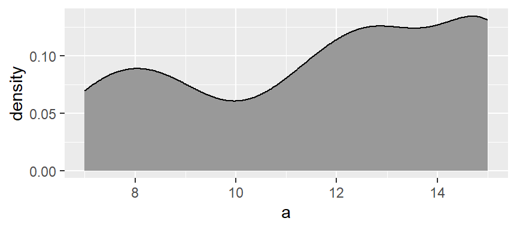
17.3 Boxplots
A boxplot is another popular plot used to explore distributions. It emphasizes a measure of location (typically the median), and two measures of spread–the interquartile range and the overall range (excluding any outliers).
In ggplot2 we can use the geom_boxplot() function. For example,
ggplot(NULL, aes(x = a)) + geom_boxplot() +
xlab(NULL) + theme(axis.text.y = element_blank(),
axis.ticks.y = element_blank()) 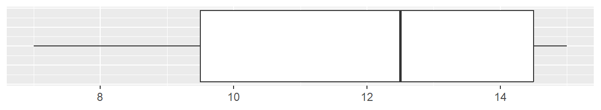
The geom_boxplot function can map the values to the x-axis or to the y-axis. Traditionally, it’s mapped to the y-axis. Here, we choose to map it to the x-axis. You’ll note the optional functions xlab(NULL) + theme(axis.text.y=element_blank(), ... ) added to the code chunk; these are added to suppress labels and values/tics along the y-axis given that their default values do not serve a purpose here.
The following figure describes the anatomy of a boxplot.
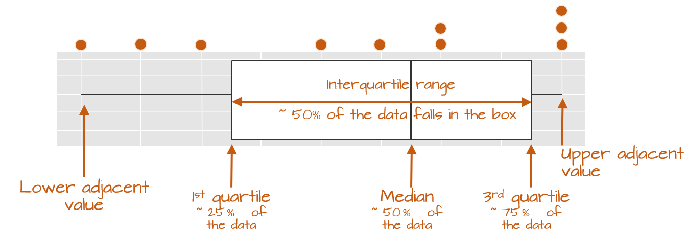
The boxplot provides us with many meaningful pieces of information. For example, it gives us a center value: the median. It also tells us where the middle 50% of the values lie (in our example, approximately 50% of the values lie between 9.5 and 14.5). This range is referred to as the interquartile range (or IQR for short). Note that this is only an approximation given that some datasets may not lend themselves well to defining exactly 50% of their central values. For example, our batch only has four data points falling within the interquartile range (instead of five) because of tied values in the upper end of the distribution.
The long narrow lines extending beyond the interquartile range are referred to as the adjacent values–you might also see them referred to as whiskers. They represent either 1.5 times the width between the median and the nearest interquartile value or the most extreme value, whichever is closest to the batch center.
Sometimes, you will encounter values that fall outside of the lower and/or upper adjacent values; such values are often referred to as outliers.
17.3.1 Not all boxplots are created equal!
Not all boxplots are created equal. There are many different ways in which quantiles can be defined. For example, some will compute a quantile as \(( i - 0.5) / n\) where \(i\) is the nth element of the batch of data and \(n\) is the total number of elements in that batch. This is the method implemented by the base R’s boxplot function; this explains its different boxplot output compared to geom_boxplot in our working example:
boxplot(a, horizontal = TRUE)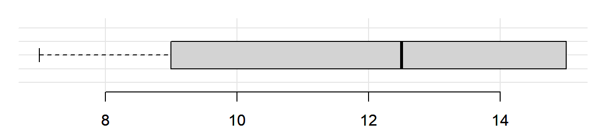
The upper and lower quartiles differ from those of ggplot since the three upper values values, 15, end up falling inside the interquartile range following the aforementioned quantile definition. This eliminates any upper whiskers. In most cases, however, the difference will not matter as long as you adopt the same boxplot procedure when comparing batches. Also, the difference between the plots become insignificant with larger batch sizes.
17.3.2 Implementing different quantile types in geom_boxplot
If you wish to implement different quantile methods in ggplot, you will need to create a custom function. For example, if you wish to adopt quantile method referenced in the previous section, (type = 5 in the quantile function) type the following:
# Function to extract quantiles given an f-value type (type = 5 in this example)
qtl.bxp <- function(x, type = 5) {
qtl <- quantile(x, type = type)
df <- data.frame(ymin = qtl[1], ymax = qtl[5],
upper = qtl[4], lower = qtl[2], middle = qtl[3])
}
# Plot the boxplot
ggplot(NULL, aes(x = "", y = a)) +
stat_summary(fun.data = qtl.bxp, fun.args = list(type = 5),
geom = 'boxplot') +
xlab(NULL) + theme(axis.text.y = element_blank()) +
coord_flip()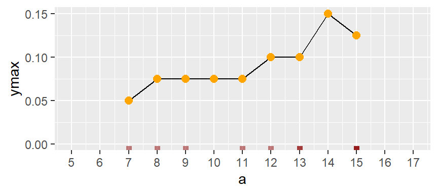
Note the use of stat_summary instead of geom_boxplot.
17.4 Quantile plots
A quantile is a value that divides a set of data into two parts such that a specified fraction, the \(f\)-value, of the data falls below that value, and the remaining fraction falls above it. The fraction \(f\) can take on many forms, here, we’ll adopt the following definition:
\[ f_i = \frac{i - 0.5}{n} \]
where \(i\) is the nth element of the batch of sorted data and \(n\) is the total number of elements in that batch.
As noted in the boxplot section of this chapter, there are many different ways in which \(f\) can be computed. Examples of other forms of the \(f\) value expression include:
\[ f_i = \frac{i - 1/3}{n + 1/3} \]
\[ f_i = \frac{i}{n+1} \]
\[ f_i = \frac{i - 1}{n - 1} \]
Being consistent with your choice of an \(f\) expression is probably more important than which one you choose.
The x-axis in a quantile plot shows the f-values–the full range of probability fractions. The notation \(f\) may be used as a shorthand for the \(f\)-value. In other texts, you may see the fraction symbolized by \(p\) for probability. The y-axis maps the \(f\)-quantile, \(q(f)\), which gives us the value in the batch that is equal to or less than the associated \(f\) fraction. For example, the \(f\)-value of 0.25 (~the 25th percentile) is associated with the quantile value of 9 meaning that 25% of the values in the dataset have values of 9 or less.
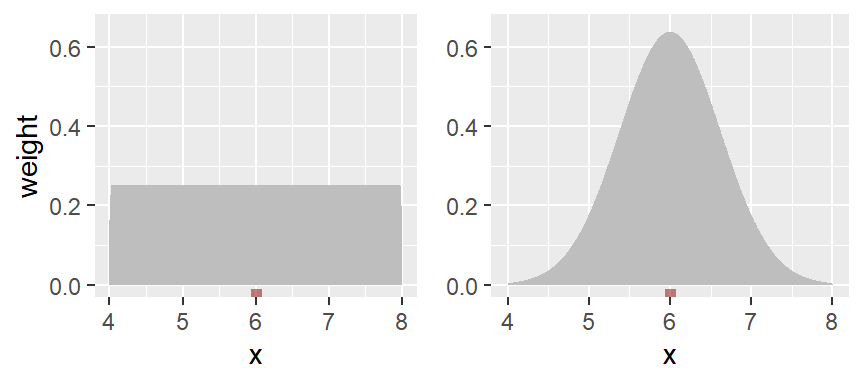
Note that the y-axis can be labeled with \(q(f)\) or with the variable name.
You can report the quantile for a fraction \(f\) as “the \(f\)-quantile”. For example, to report the value in a that splits the data between the fraction greater than and less than 0.25, you would state “the 0.25 quantile of a is 9 …” (units of a). In notation form, you would write \(q(0.25) = 9\).
17.4.1 Interpolating a quantile
The quantile need not be limited to existing values in a batch. The relationship between the quantile \(q(f)\) and the fraction \(f\) is a continuous function–we refer to this relationship as the quantile function. As such, one can compute a quantile value for any \(f\) fraction between 0 and 1. Continuing with the working example, we can find the matching quantile for an \(f\) = 0.5 by linear interpolation between the two nearest points in a.
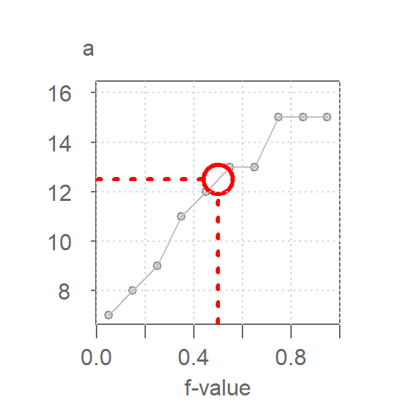
Formally, the equation is given by
\[ q(f) = a_i + (r - i) (a_{i+1} - a_i) \]
Where:
- \(a\) is the sorted vector values.
- \(f\) is the fraction for which the quantile is to be interpolated.
- \(r\) is the rank corresponding to the fraction \(f\) and is computed from \((f \times n) + 0.5\).
- \(n\) is The number of elements in the vector
a. - \(i\) is the floor of the rank \(r\) representing the lower index for interpolation.
- \(i+1\) is the ceiling of the rank \(r\) representing the upper index for interpolation.
- \(a_i\) is the value in the vector \(a\) at index \(i\).
- \(a_{i+i}\) is the value in the vector \(a\) at index \(i +1\).
Continuing with our working example, we are seeking the quantile for \(f\) = 0.5. The code used to generate the interpolated quantile becomes:
a <- sort(a) # Ensure that values are sorted
f <- 0.5 # The desired f-value
r <- (f * length(a)) + 0.5
i <- floor(r)
q_f <- a[i] + (r - i) * (a[i+1] - a[i])The resulting quantile \(q(0.5)\) value is 12.5.
17.4.2 The boxplot: a special case of a quantile plot
While in itself not a function, the boxplot is a graphical tool that leverages information derived from quantiles in that it returns the 1st, 2nd (median) and 3rd quartiles.
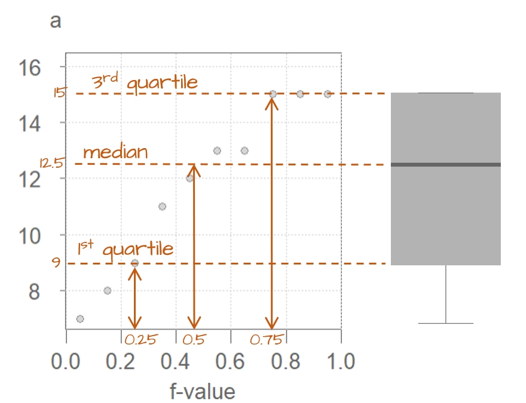
17.4.3 Computing \(q(f)\)
Computing the quantile first requires the \(f\) value for which the quantile is to be computed. The \(f\) value is computed by first sorting the batch of values from smallest to largest.
a.o <- sort(a)
a.o [1] 7 8 9 11 12 13 13 15 15 15With the numbers sorted, we can proceed with the computation of \(f\).
For each value in a, the \(f\) value is thus:
i <- 1 : length(a) # Create indices
f.val <- (i - 0.5) / length(a) # Compute the f-value
a.fi <- data.frame(a.o, f.val) # Create dataframe of sorted valuesNote that in the last line of code, we are appending the ordered representation of a to f.val given that f.val assumes an ordered dataset. The data frame a.fi should look like this:
| a.o | f.val |
|---|---|
| 7 | 0.05 |
| 8 | 0.15 |
| 9 | 0.25 |
| 11 | 0.35 |
| 12 | 0.45 |
| 13 | 0.55 |
| 13 | 0.65 |
| 15 | 0.75 |
| 15 | 0.85 |
| 15 | 0.95 |
When seeking a quantile that might not necessarily match an exact value in the batch, use the quantile() function. For example, to find the value associated with a quantile of \(0.5\), type:
quantile(a, 0.5) 50%
12.5 To get quantile values for multiple fractions, simply wrap the fractions with the c() function:
quantile(a, c(0.25, 0.5, 0.75)) 25% 50% 75%
9.5 12.5 14.5 The quantile function is designed to accept different \(f\) value expressions. To see the list of algorithm options, type ?quantile at a command prompt. By default, R adopts algorithm type = 7 which is \((i-1)/(n-1)\). To adopt Cleveland’s algorithm, set type = 5. E.g.:
quantile(a, c(0.25, 0.5, 0.75), type = 5) 25% 50% 75%
9.0 12.5 15.0 Note the difference in the upper quartile value when compared to the default type = 7 option of the quantile() function.
The a.fi data frame can be inputed into any plotting function to generate the quantile plot. For example, using ggplot’s function, we get:
ggplot(a.fi, aes(x = f.val, y = a.o)) + geom_point() + xlab("f-value")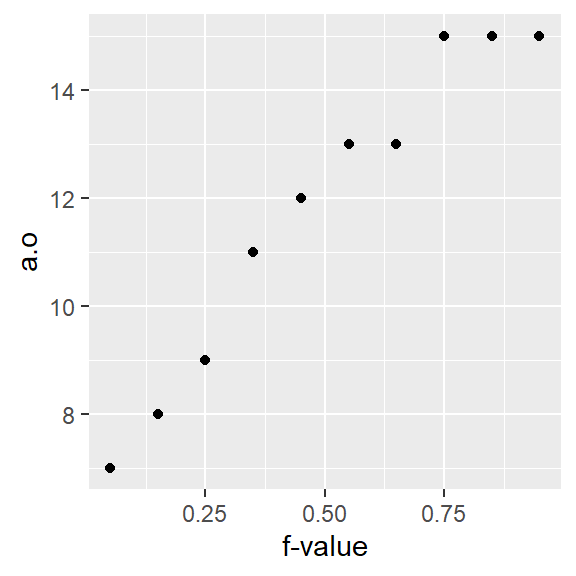
17.4.3.1 Computing the \(f\)-value using eda_fval
This course’s tukeyedar package has a function, eda_fval, that will generate \(f\) values for a batch of values using different algorithms. By default, it adopts Cleveland’s method. For example,
library(tukeyedar)
eda_fval(a) [1] 0.05 0.15 0.25 0.35 0.45 0.55 0.65 0.75 0.85 0.95Other methods can be passed to the function via the q.type argument. The list of methods is available via ?eda_fval. For example, to compute the \(f\) value as implemented in the quantile function, type:
eda_fval(a, q.type = 7) [1] 0.0000000 0.1111111 0.2222222 0.3333333 0.4444444 0.5555556 0.6666667 0.7777778 0.8888889 1.000000017.4.3.2 Using ggplot’s qq geom
If you did not want to go through the trouble of computing the \(f\)-values for a ggplot derived \(q(f)\) plot, you could simply call the function stat_qq() as in:
ggplot(NULL, aes(sample = a)) + stat_qq(distribution = qunif) + xlab("f-value")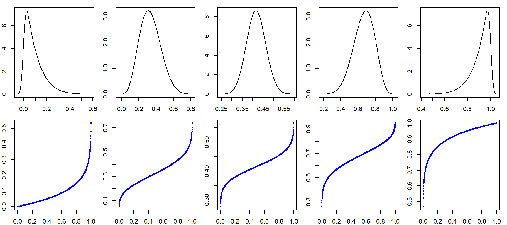
However, ggplot’s stat_qq function does not adopt Cleveland’s \(f\)-value calculation. Hence, you’ll notice a very slight offset in position along the x-axis. For example, the third-to-last point has an \(f\)-value of 0.744 instead of an \(f\)-value of 0.75 as calculated using Cleveland’s method.
Also note the change in mapping parameter: sample = a. We are no longer specifying the axis to map to. Instead, we are passing the sample to the stat_qq function which generates the x and y axes values from the sample.
17.5 How quantile plots behave in the face of skewed data
It can be helpful to simulate distributions of difference skewness to see how a quantile plot may behave. In the following figure, the top row shows the different density distribution plots and the bottom row shows the quantile plots for each distribution (note that the x-axis maps the \(f\)-values).

17.6 Summary
This chapter introduced foundational visual tools for exploring the distribution of a single variable. Through histograms, boxplots, and density plots, you learned how to assess shape, spread, and central tendency. The concept of quantiles was introduced as a building block for comparing distributions and understanding variability. These tools form the basis for more advanced comparisons and modeling techniques in later chapters.